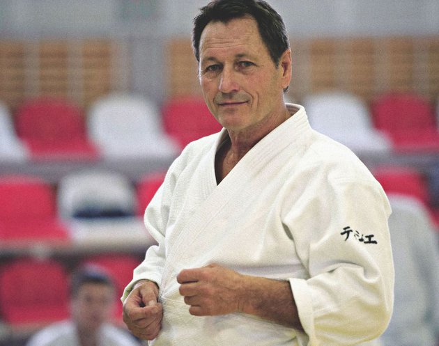
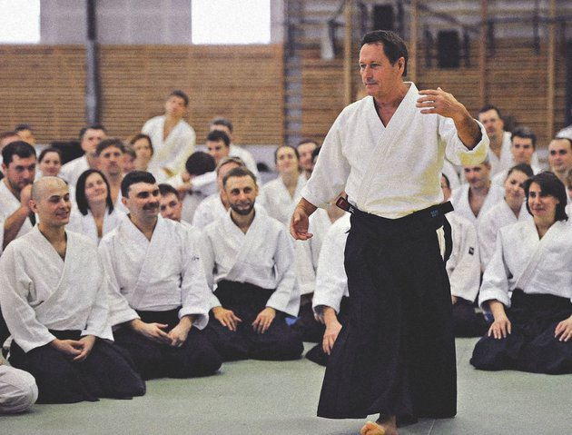
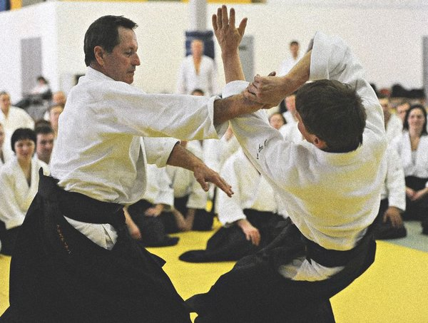
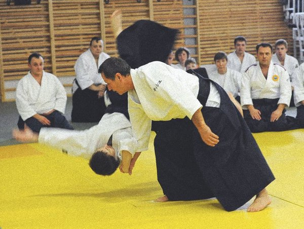

|
«Это очень дзенская ситуация»:
как и зачем заниматься айкидо сегодня
В Москву по приглашению клуба айкидо «Гакумон Додзё» и его
руководителя Михаила Сафронова с семинаром приехал Кристиан
Тиссье — глава Федерации айкидо Франции и единственный неяпонец,
получивший восьмой дан в этом боевом искусстве. Men’s Health
встретился с Тиссье, чтобы узнать о том, зачем изучать айкидо
сегодня и чем единоборство похоже на любимый Кристианом гольф.

|
Как изменилось ваше отношение к айкидо за долгие годы,
которые вы им занимаетесь?
Да, я занимаюсь айкидо 56 лет. В 11 лет, когда я начал, у меня было
одно видение, в 18 — совсем другое. Стабилизировалось оно примерно
в 25 и оставалось неизменным примерно до 50. На первом этапе мы
изучаем технику, хотим стать самыми сильными — и это очень хорошо.
Дальше мы уже знакомы с техникой, но находимся в поиске скорости и
эффективности движений. А потом наступает период, в котором я
нахожусь сейчас: я ищу чистоту и точность движений.
|
А как менялась мотивация тех, кто выбирает айкидо?
Раньше у людей была двойная мотивация. Одни приходили получить
навыки самозащиты, а другие — потому что слышали про философский
и эзотерический аспект айкидо. Сегодня человеку, который хочет
заниматься боевыми искусствами, предоставлен огромный выбор.
Крав-мага, бокс, миксфайт — многие стили боя позволяют добиться
нужного результата очень быстро. Поэтому теми, кто приходит изучать
айкидо сегодня, движут более глубокие мотивы. Эти люди хотят изучить
дисциплину, а не заниматься спортом (тем более что айкидо — это,
строго говоря, не спорт, у нас не проводятся соревнования).
Мы учимся узнавать себя, лучше выстраивать отношения с окружающими
и попутно бороться со страхами, от которых прежде всего и нужно себя
защищать.
|
Я как раз хотел спросить, насколько важен в занятиях духовный аспект.
И в чем он заключается?
Да, этот аспект важен. Наши занятия связаны с определенными
ценностями. Наша цель — найти свою степень свободы в определенном
человеческом сообществе, и в практике айкидо эта проблема находит
конкретное воплощение. Партнер, играющий роль противника, должен
создать ограничения, которые мы преодолеваем, руководствуясь
естественными, если подумать, человеческими принципами. Это уважение,
эффективность движений, соблюдение дистанции. Естественное положение
человеческого тела — это прямая, не сгорбленная спина и раскрытые
плечи. Объясню. Как только я получаю угрозу атаки, моя первая
реакция — закрыться, согнуться, но через изучение техники мы
учимся сохранять осанку, дистанцию, широкий угол зрения. А для этого
требуется не только физическая, но и некоторая внутренняя работа.
|
А насколько целесообразно идти заниматься айкидо так же, как многие
сегодня занимаются йогой, которая превратилась во что-то вроде фитнеса?
Хороший вопрос. Мы с вами прекрасно знаем, что такое йога. В то же
время гимнастический, скажем так, аспект йоги, предполагающий
динамичную смену позиций, привлекает большее количество людей, чем
эзотерический. Но любая подобная практика — это работа над чистотой
действий, движений, над расслаблением. Так через физическую практику
приходит духовная. И в этом, как мне кажется, смысл любой
практики — от карате до танца. Скажу иначе. Есть два способа работы
над собой. С одной стороны, это ментальная работа — рефлексия,
размышления или медитация. С другой стороны, и это наш случай,
использование своего тела для достижения тех же целей — улучшения
уровня своей жизни. Но результат у обоих путей один и тот же. Это
просто вопрос выбора. Одних умиротворяет медитация, других — ходьба,
третьих — наблюдение за морскими волнами. Про айкидо, в свою
очередь, говорят, что это дзен в движении. В конечном счете,
выбор — это просто вопрос характера. В 15 лет я бы, наверное, не
стал заниматься дзеном или медитацией. Я был очень активным
подростком и выбрал айкидо, потому что оно соответствовало моему
характеру. А ко всему остальному меня подвели мои учителя.
|
При этом многие совмещают медитации и боевые искусства.
Разумеется! И у меня очень много таких знакомых. Например, я знаю
японку, которая занимается айкидо и достигла в нем огромных успехов,
но при этом каждое утро она занимается медитацией. Но это связано с
тем, что она выросла в буддийском монастыре, а ее отец был монахом.
Так что это результат взаимодействия с определенной культурной средой.
Но есть у меня и другие знакомые. Они пытаются совмещать айкидо и
медитацию, но удовольствия им это не приносит, они не могут найти в
этом себя, это не веление души, а какая-то надуманная потребность.
На мой взгляд, главный вопрос, которым стоит задаться, заключается
в том, насколько естественно для вас то, чем вы занимаетесь. Не
является ли это чем-то навязанным? А так это может быть что угодно:
айкидо прекрасно сочетается с ходьбой или каким-то другим видом спорта.
|
|

|
Я знаю, что в вашей жизни айкидо соседствует с гольфом. Есть ли
между этими занятиями какая-то связь для вас лично?
Да, гольф для меня очень похож на боевые практики. Это физически
очень сложный спорт — требуется концентрация, хорошая техника,
точность движений. Но в то же время это очень приятно. Если у вас
нет цели добиться больших спортивных результатов, это очень
расслабляющее занятие. У меня нет — и не будет — хорошей техники,
но я получаю удовольствие, и это для меня главное.
|
А в чем сходство с боевыми искусствами?
У вас есть мячик, лишенный собственной воли и страха. Боится в этой
ситуации только тот, кто хочет по нему ударить, потому что у него
нет права на ошибку. Это очень похоже на боевые искусства, это очень
дзенская ситуация. В дзене ты всегда должен помнить, что смерть
стоит за твоим левым плечом. Это означает, что любое твое действие
совершается в первый и последний раз. Такой подход дает особое
состояние сознания, которое очень близко к тому, чего мы пытаемся
добиться в айкидо, — там тоже каждое движение имеет особое значение.
В гольфе тоже важна точность и чистота, гольф не терпит небрежности.
|
Есть расхожее мнение, что айкидо — это очень долго, в отличие от бокса,
который дает быстрый результат. Считается, что для того чтобы добиться
результата, им нужно заниматься пару десятков лет. Это правда?
И да и нет. Есть люди, которые занимаются айкидо полгода или год и
уже получают от этого удовольствие, которого им не дали бы занятия
боксом, приносящие куда более быстрый результат. Но в чем тут фокус.
Я занимался боксом – почти на профессиональном уровне, — когда жил в
Японии и потом во Франции. Но если бы я был боксером сегодня, то
стоял бы за пределами ринга и кричал: «Давай-давай!» В то время как
занимаясь айкидо, я и сегодня нахожусь в центре ринга. Теперь
вернемся к боксу, раз уж вы привели этот пример. Когда говорят об
эффективности бокса, подразумевают тех, кого мы видим на соревнованиях.
То есть успешных спортсменов с хорошим уровнем. Тех, у кого этот
уровень низок, мы не видим. Если у человека не получается заниматься
боксом, он проигрывает бой за боем и в итоге просто бросает это дело.
И где эффективность? Хотя формально те, кто считает, что бокс
результативнее, — правы. Мой сенсей говорил, что есть люди, которые
занимаются айкидо, но ищут в нем только насилие. У них отличная
техника, физическая подготовка — сенсей приводил конкретные примеры
мастеров, у которых был шестой-седьмой дан. Всем им тогда было по
30–35 лет, и у всех были серьезные травмы спины, плеч, они с трудом
ходили. При этом моему сенсею было в тот момент 70 лет, и он двигался
как молодой. Он говорил, что надо выбрать: или ты будешь сильным в
течение пяти лет, а потом придется расплачиваться за это всю жизнь,
или станешь заниматься размеренно, в соответствии со своими данными,
но всю жизнь.
|
Вы говорите о спортсменах, а я спрашивал о том, что более
результативно для человека, который просто хочет научиться
самозащите и привести себя в приличную физическую форму.
Для такого человека, конечно, вернее выбрать бокс. А потом за два
года он достигнет своего максимума в боксе и придет заниматься айкидо.
|
А что человек получит за два года айкидо?
Он получит два года айкидо. (Смеется.) Поймите, это просто разные
подходы. Есть быстрые системы обучения самозащите, рассчитанные на
изучение приемов. А есть айкидо или, вернемся к вашему примеру, — йога.
Приемы изучить легко. Я могу сейчас схватить вас за палец и сломать его.
Этому учат даже в армии, причем за три недели. Но в
айкидо — и йоге — дальше следует глубинная работа, которой можно и
нужно заниматься всю жизнь. Я, например, не очень гибкий — и никогда
гибким не был. Если я пойду на йогу, то вряд ли быстро научусь
завязывать ноги узлом за головой. Но занимаясь много лет, я так или
иначе овладею концепцией и философией йоги. А гибкий от природы человек,
преследующий цель научиться трюкам, позанимается пару лет, но этого
знания не получит. Для этого и требуется время.
|
|


|
Вы уже больше двадцати лет ездите в Россию.
Что вы можете сказать о развитии айкидо здесь?
Мне сложно ответить на этот вопрос, я не знаю всех существующих у
вас школ, но те, с кем я общаюсь, обладают очень хорошим уровнем — я
даже чувствую, что нахожусь в несколько привилегированном положении.
(Улыбается.) В то же время интересно, как айкидо коррелирует с
национальным характером. У вас очень динамичное, энергичное айкидо,
которое здесь воспринимается как боевое искусство, в отличие от Швеции,
например, где айкидо воспринимается как практика для расслабления.
|
У вас в России есть некоторое количество учеников. Как они появились?
Люди обращаются ко мне, ездят за мной по всему миру, постепенно
выстраиваются отношения учитель-ученик. Так я оказался здесь — потому
что здесь мои ученики. Но если мне звонит кто-то незнакомый и говорит:
«Мсье Тиссье, приезжайте, проведите семинар, я вам заплачу», — я
отказываюсь, потому что я не знаю этого человека, а торговлей я не занимаюсь.
|
Можете в заключение в двух словах сформулировать, что все-таки дает
айкидо, почему среди многообразия боевых искусств стоит выбрать именно его?
Учитывая все, что я сказал ранее, ответ уложится и в одно слово: бесконечность.
|
|
Дата : 22 июня 2018
Автор : Ярослав Забалуев
Фото : Мария Полевая
|
|
|
|
|